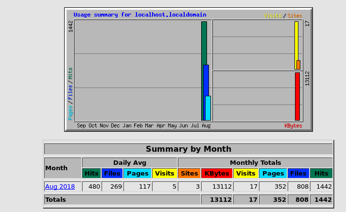

webalize
webzlizer是一个免费的web server分析工具，它能够分析apache、ftp等日志，将结果以html形式展示。
1、安装一些依赖软件
|
[root@localhost
bandwidthd-2.0.1]# yum install -y webalizer
|
2、配置webalizer，编辑配置文件“/etc/httpd/conf.d/webalizer.conf”
|
[root@localhost
bandwidthd]# gedit /etc/snmp/snmpd.conf
<Location
/usage>
Order deny,allow
#
Deny from all //注释掉这句
Allow from 127.0.0.1
Allow from ::1
# Allow from .example.com
</Location>
|
3、生成webalizer日志文件
|
[root@localhost
bandwidthd]# /usr/bin/webalizer
|
4、重启apache，如果不重启就看不到效果
|
[root@localhost
bandwidthd]# service httpd restart
停止 httpd：
[确定]
正在启动 httpd：httpd:
Could not reliably determine the server's fully qualified domain name, using
localhost.localdomain for ServerName
[确定]
|
5、在浏览器输入“127.0.0.1/usage”,这样就可以访问了

Copyright@david
zhytwj2018@163.com